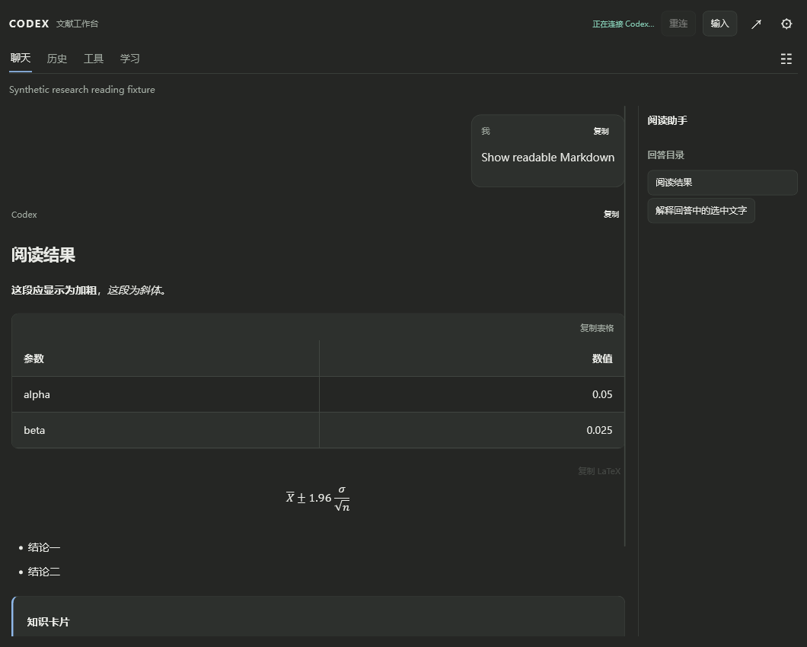
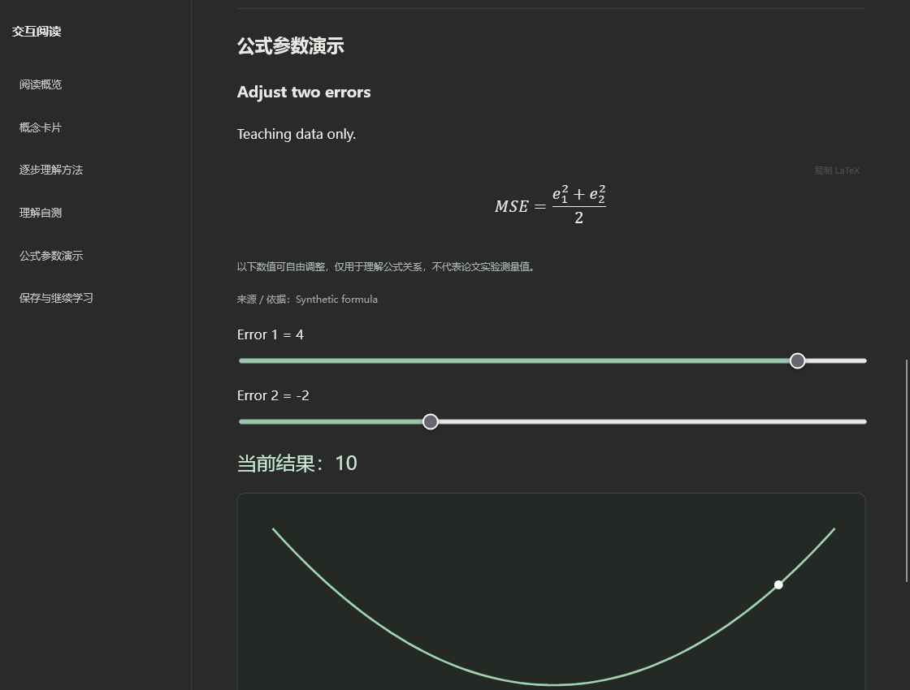

READ · ASK · UNDERSTAND
让论文读得更明白
在 Zotero 中提问、读公式、看图片、整理方法图，再用交互卡片和小测验检查自己的理解。
Zotero 10.0.xWindows x64 已验证使用自己的 Codex 账号第一次安装：先完整解压分享包，按下面步骤安装。插件文件是 codex-for-zotero-__VERSION__.xpi，需要在 Zotero 的“工具 → 插件”中安装。双击同文件夹的“检查环境.cmd”可检查 Codex 路径。
界面示例
以下是合成材料的功能示例，不含作者的论文或聊天记录。截图用于展示排版与交互，不代表已在你的电脑连接成功。

